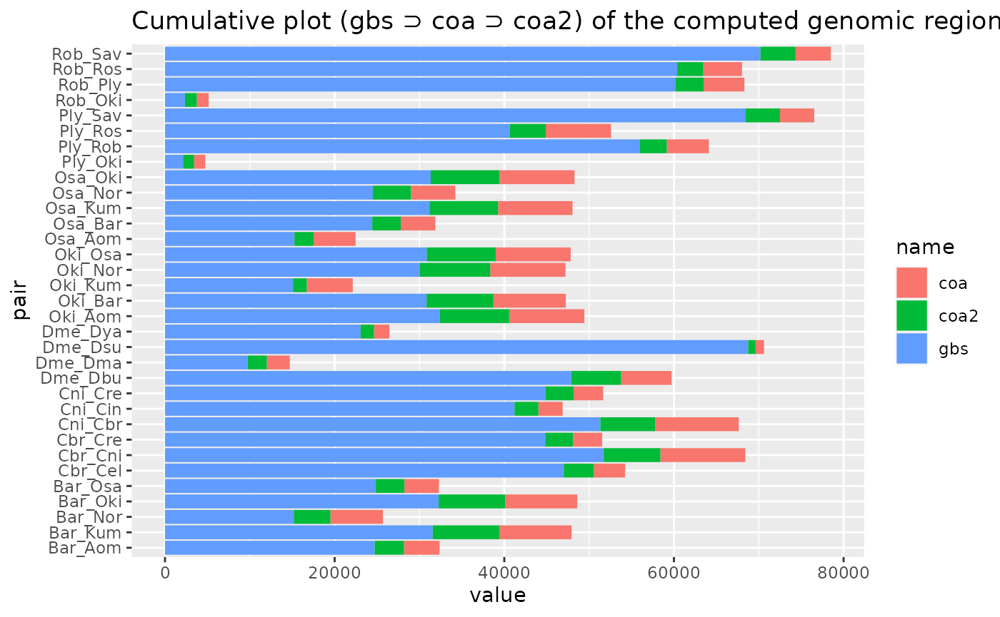

Load genomic break data
Charles Plessy
09 February, 2022
Source:vignettes/LoadGenomicBreaks.Rmd
LoadGenomicBreaks.Rmd
knitr::opts_knit$set(verbose = TRUE, cache = TRUE)Introduction
This vignette loads the genomic breaks data, consolidates colinear regions, extracts unaligned and unmapped regions, transfers annotation data and saves the resulting objects in a serialised R object (RData file) for reuse in other vignettes.
Related objects are stored in lists to avoid cluttering the environment.
Packages and data
suppressPackageStartupMessages({
library('GenomicBreaks')
library('ggplot2')
library("BreakpointsData")
})
(genomes <- OikScrambling:::loadAllGenomes())## Loading required package: BSgenome## Loading required package: Biostrings## Loading required package: XVector##
## Attaching package: 'Biostrings'## The following object is masked from 'package:base':
##
## strsplit## Loading required package: rtracklayer## List of length 6
## names(6): Oki Osa Bar Kum Aom NorGenomic breaks
Long/short arm information
Short / long arm annotation will be done by the GenomicBreaks::flagLongShort() function.
loadLongShort <- function(file, genome) {
file <- system.file(paste0("extdata/Annotations/", file), package = "BreakpointsData")
gr <- rtracklayer::import.gff3(file)
gr$source <- gr$type <- gr$score <- gr$phase <- NULL
GRanges(gr, seqinfo = seqinfo(genome), strand = "*")
}
longShort <- SimpleList()
longShort$Oki <- loadLongShort("OKI2018_I69.v2/OKI2018_I69.arms.gff3", OKI2018_I69)
longShort$Osa <- loadLongShort("OSKA2016v1.9/OSKA2016v1.9.arms.gff3", OSKA2016v1.9)
longShort$Bar <- loadLongShort("Bar2_p4.Flye/Bar2_p4.Flye.arms.gff3", Bar2_p4)
longShort## List of length 3
## names(3): Oki Osa BarRepeat regions
Load from BreakpointsData package via OikScrambling:::loadAllRepeats()
(reps <- OikScrambling:::loadAllRepeats())## List of length 6
## names(6): Oki Osa Bar Kum Aom Nor
annotateWithReps.GRanges <- function(gr, rep) {
# Inspired from CAGEr:::ranges2names
o <- findOverlaps(gr, rep, ignore.strand = TRUE)
o <- as(o, "List")
o <- extractList(rep$Class |> as.character(), o)
o <- endoapply(o, unique)
o[sapply(o, length) == 0] <- NA
gr$rep <- o
gr
}
overlapLength.GRanges <- function(gr, rep) {
# Inspired from CAGEr:::ranges2names
redRep <- reduce(rep)
o <- findOverlaps(gr, redRep, ignore.strand = TRUE)
o <- as(o, "List")
repGrl <- extractList(redRep, o)
gr$repOvlp <- pintersect(gr, repGrl) |> width() |> sum()
gr
}
annotateWithReps.GBreaks <- function(gb, repT, repQ) {
gb$query <- annotateWithReps.GRanges(gb$query, repQ)
gb <- annotateWithReps.GRanges(gb, repT)
gb$query <- overlapLength.GRanges (gb$query, repQ)
gb <- overlapLength.GRanges (gb, repT)
}
annotateWithReps.GBreaksSimpleList <- function(gbl, reps) {
gbl$Oki_Osa <- gbl$Oki_Osa |> annotateWithReps.GBreaks(reps$Oki, reps$Osa)
gbl$Oki_Bar <- gbl$Oki_Bar |> annotateWithReps.GBreaks(reps$Oki, reps$Bar)
gbl$Oki_Kum <- gbl$Oki_Kum |> annotateWithReps.GBreaks(reps$Oki, reps$Kum)
gbl$Oki_Aom <- gbl$Oki_Aom |> annotateWithReps.GBreaks(reps$Oki, reps$Aom)
gbl$Oki_Nor <- gbl$Oki_Nor |> annotateWithReps.GBreaks(reps$Oki, reps$Nor)
gbl$Osa_Oki <- gbl$Osa_Oki |> annotateWithReps.GBreaks(reps$Osa, reps$Oki)
gbl$Osa_Bar <- gbl$Osa_Bar |> annotateWithReps.GBreaks(reps$Osa, reps$Bar)
gbl$Osa_Kum <- gbl$Osa_Kum |> annotateWithReps.GBreaks(reps$Osa, reps$Kum)
gbl$Osa_Aom <- gbl$Osa_Aom |> annotateWithReps.GBreaks(reps$Osa, reps$Aom)
gbl$Osa_Nor <- gbl$Osa_Nor |> annotateWithReps.GBreaks(reps$Osa, reps$Nor)
gbl$Bar_Oki <- gbl$Bar_Oki |> annotateWithReps.GBreaks(reps$Bar, reps$Oki)
gbl$Bar_Osa <- gbl$Bar_Osa |> annotateWithReps.GBreaks(reps$Bar, reps$Osa)
gbl$Bar_Kum <- gbl$Bar_Kum |> annotateWithReps.GBreaks(reps$Bar, reps$Kum)
gbl$Bar_Aom <- gbl$Bar_Aom |> annotateWithReps.GBreaks(reps$Bar, reps$Aom)
gbl$Bar_Nor <- gbl$Bar_Nor |> annotateWithReps.GBreaks(reps$Bar, reps$Nor)
gbl
}Transcript annotations
(transcripts <- OikScrambling:::loadAllTranscriptsGR())## List of length 8
## names(8): Oki Osa Bar Kum Aom Nor Ply Ros
annotateWithTranscripts <- function(x, annotT, annotQ) UseMethod("annotateWithTranscripts")
annotateWithTranscripts.GRanges <- function(x, annotT, annotQ = NULL) {
# Taken from CAGEr (and I am the author)
ranges2names <- function (rangesA, rangesB) {
if (is.null(names(rangesB)))
stop(sQuote("rangesB"), " must contain have names.")
names <- findOverlaps(rangesA, rangesB)
names <- as(names, "List")
names <- extractList(names(rangesB), names)
names <- unique(names)
names <- unstrsplit(names, ";")
Rle(names)
}
x$transcripts <- ranges2names(x, annotT)
x$transcripts[x$transcripts == ''] <- NA
x
}
annotateWithTranscripts.GBreaks <- function(x, annotT, annotQ) {
x$query <- annotateWithTranscripts.GRanges(x$query, annotQ)
x <- annotateWithTranscripts.GRanges(x, annotT)
x
}
annotateWithTranscripts.GRangesList <- function(x, annotT, annotQ = annotT) {
x$Oki_Osa <- x$Oki_Osa |> annotateWithTranscripts(annotT$Oki, annotQ$Osa)
x$Oki_Bar <- x$Oki_Bar |> annotateWithTranscripts(annotT$Oki, annotQ$Bar)
x$Oki_Kum <- x$Oki_Kum |> annotateWithTranscripts(annotT$Oki, annotQ$Kum)
x$Oki_Aom <- x$Oki_Aom |> annotateWithTranscripts(annotT$Oki, annotQ$Aom)
x$Oki_Nor <- x$Oki_Nor |> annotateWithTranscripts(annotT$Oki, annotQ$Nor)
x$Osa_Oki <- x$Osa_Oki |> annotateWithTranscripts(annotT$Osa, annotQ$Oki)
x$Osa_Bar <- x$Osa_Bar |> annotateWithTranscripts(annotT$Osa, annotQ$Bar)
x$Osa_Kum <- x$Osa_Kum |> annotateWithTranscripts(annotT$Osa, annotQ$Kum)
x$Osa_Aom <- x$Osa_Aom |> annotateWithTranscripts(annotT$Osa, annotQ$Aom)
x$Osa_Nor <- x$Osa_Nor |> annotateWithTranscripts(annotT$Osa, annotQ$Nor)
x$Bar_Oki <- x$Bar_Oki |> annotateWithTranscripts(annotT$Bar, annotQ$Oki)
x$Bar_Osa <- x$Bar_Osa |> annotateWithTranscripts(annotT$Bar, annotQ$Osa)
x$Bar_Kum <- x$Bar_Kum |> annotateWithTranscripts(annotT$Bar, annotQ$Kum)
x$Bar_Aom <- x$Bar_Aom |> annotateWithTranscripts(annotT$Bar, annotQ$Aom)
x$Bar_Nor <- x$Bar_Nor |> annotateWithTranscripts(annotT$Bar, annotQ$Nor)
x
}
annotateWithTranscripts.SimpleList <- function(x, annotT, annotQ = annotT)
annotateWithTranscripts.GRangesList(x, annotT = annotT, annotQ = annotQ)Mapped alignments
Let’s load data from genome alignments, using the copy distributed in the BreakpointsData package.
# Local function to add extra annotation on long/short arms while loading data
load_genomic_breaks_ <- function(file, genomeT, genomeQ, longShort=NULL) {
file <- system.file(paste0("extdata/Oidioi_pairwise_v3/", file), package = "BreakpointsData")
gb <- load_genomic_breaks(file, genomeT, genomeQ)
if (! is.null(longShort)) {
gb <- flagLongShort(gb, longShort)
}
gb
}
gbs <- SimpleList()
gbs$Oki_Osa <- load_genomic_breaks_("OKI2018_I69_1.0__OSKA2016v1.9.gff.gz", OKI2018_I69, OSKA2016v1.9, longShort$Oki) |> annotateWithReps.GBreaks(reps$Oki, reps$Osa)
gbs$Oki_Bar <- load_genomic_breaks_("OKI2018_I69_1.0__Bar2_p4.gff.gz", OKI2018_I69, Bar2_p4, longShort$Oki) |> annotateWithReps.GBreaks(reps$Oki, reps$Bar)
gbs$Oki_Kum <- load_genomic_breaks_("OKI2018_I69_1.0__KUM-M3-7f.gff.gz", OKI2018_I69, KUM_M3, longShort$Oki) |> annotateWithReps.GBreaks(reps$Oki, reps$Kum)
gbs$Oki_Aom <- load_genomic_breaks_("OKI2018_I69_1.0__AOM-5-5f.gff.gz", OKI2018_I69, AOM_5, longShort$Oki) |> annotateWithReps.GBreaks(reps$Oki, reps$Aom)
gbs$Oki_Nor <- load_genomic_breaks_("OKI2018_I69_1.0__OdB3.gff.gz", OKI2018_I69, OdB3, longShort$Oki) |> annotateWithReps.GBreaks(reps$Oki, reps$Nor)
gbs$Osa_Oki <- load_genomic_breaks_("OSKA2016v1.9__OKI2018_I69_1.0.gff.gz", OSKA2016v1.9, OKI2018_I69, longShort$Osa) |> annotateWithReps.GBreaks(reps$Osa, reps$Oki)
gbs$Osa_Bar <- load_genomic_breaks_("OSKA2016v1.9__Bar2_p4.gff.gz", OSKA2016v1.9, Bar2_p4, longShort$Osa) |> annotateWithReps.GBreaks(reps$Osa, reps$Bar)
gbs$Osa_Kum <- load_genomic_breaks_("OSKA2016v1.9__KUM-M3-7f.gff.gz", OSKA2016v1.9, KUM_M3, longShort$Osa) |> annotateWithReps.GBreaks(reps$Osa, reps$Kum)
gbs$Osa_Aom <- load_genomic_breaks_("OSKA2016v1.9__AOM-5-5f.gff.gz", OSKA2016v1.9, AOM_5, longShort$Osa) |> annotateWithReps.GBreaks(reps$Osa, reps$Aom)
gbs$Osa_Nor <- load_genomic_breaks_("OSKA2016v1.9__OdB3.gff.gz", OSKA2016v1.9, OdB3, longShort$Osa) |> annotateWithReps.GBreaks(reps$Osa, reps$Nor)
gbs$Bar_Oki <- load_genomic_breaks_("Bar2_p4__OKI2018_I69_1.0.gff.gz", Bar2_p4, OKI2018_I69, longShort$Bar) |> annotateWithReps.GBreaks(reps$Bar, reps$Oki)
gbs$Bar_Osa <- load_genomic_breaks_("Bar2_p4__OSKA2016v1.9.gff.gz", Bar2_p4, OSKA2016v1.9, longShort$Bar) |> annotateWithReps.GBreaks(reps$Bar, reps$Osa)
gbs$Bar_Kum <- load_genomic_breaks_("Bar2_p4__KUM-M3-7f.gff.gz", Bar2_p4, KUM_M3, longShort$Bar) |> annotateWithReps.GBreaks(reps$Bar, reps$Kum)
gbs$Bar_Aom <- load_genomic_breaks_("Bar2_p4__AOM-5-5f.gff.gz", Bar2_p4, AOM_5, longShort$Bar) |> annotateWithReps.GBreaks(reps$Bar, reps$Aom)
gbs$Bar_Nor <- load_genomic_breaks_("Bar2_p4__OdB3.gff.gz", Bar2_p4, OdB3, longShort$Bar) |> annotateWithReps.GBreaks(reps$Bar, reps$Nor)
Oik_Oik <- names(gbs)
gbs$Ply_Ros <- load_genomic_breaks(system.file("extdata/Ciona_pairwise_v3/C_int_P__C_int_R.gff.gz", package = "BreakpointsData"), NULL, NULL)
gbs$Ply_Rob <- load_genomic_breaks(system.file("extdata/Ciona_pairwise_v3/C_int_P__C_rob_HT.gff.gz", package = "BreakpointsData"), NULL, NULL)
gbs$Ply_Sav <- load_genomic_breaks(system.file("extdata/Ciona_pairwise_v3/C_int_P__C_sav.gff.gz", package = "BreakpointsData"), NULL, NULL)
gbs$Ply_Oki <- load_genomic_breaks(system.file("extdata/Ciona_pairwise_v3/C_int_P__OKI2018_I69_1.0.gff.gz", package = "BreakpointsData"), NULL, OKI2018_I69)
gbs$Rob_Ros <- load_genomic_breaks(system.file("extdata/Ciona_pairwise_v3/C_rob_HT__C_int_R.gff.gz", package = "BreakpointsData"), NULL, NULL)
gbs$Rob_Ply <- load_genomic_breaks(system.file("extdata/Ciona_pairwise_v3/C_rob_HT__C_int_P.gff.gz", package = "BreakpointsData"), NULL, NULL)
gbs$Rob_Sav <- load_genomic_breaks(system.file("extdata/Ciona_pairwise_v3/C_rob_HT__C_sav.gff.gz", package = "BreakpointsData"), NULL, NULL)
gbs$Rob_Oki <- load_genomic_breaks(system.file("extdata/Ciona_pairwise_v3/C_rob_HT__OKI2018_I69_1.0.gff.gz", package = "BreakpointsData"), NULL, OKI2018_I69)
gbs$Dme_Dbu <- load_genomic_breaks(system.file("extdata/Insects_pairwise_v3/Dmel__Dbus_ASM1175060v1.gff.gz", package = "BreakpointsData"), NULL, NULL)
gbs$Dme_Dsu <- load_genomic_breaks(system.file("extdata/Insects_pairwise_v3/Dmel__RU_Dsub_v1.1.gff.gz", package = "BreakpointsData"), NULL, NULL)
gbs$Dme_Dya <- load_genomic_breaks(system.file("extdata/Insects_pairwise_v3/Dmel__Prin_Dyak_Tai18E2_2.0.gff.gz", package = "BreakpointsData"), NULL, NULL)
gbs$Dme_Dma <- load_genomic_breaks(system.file("extdata/Insects_pairwise_v3/Dmel__Dmau_ASM438214v1.gff.gz", package = "BreakpointsData"), NULL, NULL)
gbs[Oik_Oik] <- annotateWithTranscripts(gbs[Oik_Oik], transcripts)
gbs <- sapply(gbs, flagAll) |> SimpleList()Unaligned regions
Note that the unaligned regions are strandless and unpaired by definition.
unal <- BiocParallel::bplapply(gbs, cleanGaps) |> SimpleList()
unal[ 1:5 ] <- BiocParallel::bplapply(unal[ 1:5 ], flagLongShort, longShort$Oki)
unal[ 6:10] <- BiocParallel::bplapply(unal[ 6:10], flagLongShort, longShort$Osa)
unal[11:15] <- BiocParallel::bplapply(unal[11:15], flagLongShort, longShort$Bar)
unal[ 1:5 ] <- BiocParallel::bplapply(unal[ 1:5 ], annotateWithReps.GRanges, reps$Oki)
unal[ 6:10] <- BiocParallel::bplapply(unal[ 6:10], annotateWithReps.GRanges, reps$Osa)
unal[11:15] <- BiocParallel::bplapply(unal[11:15], annotateWithReps.GRanges, reps$Bar)
unal[ 1:5 ] <- BiocParallel::bplapply(unal[ 1:5 ], annotateWithTranscripts, transcripts$Oki)
unal[ 6:10] <- BiocParallel::bplapply(unal[ 6:10], annotateWithTranscripts, transcripts$Osa)
unal[11:15] <- BiocParallel::bplapply(unal[11:15], annotateWithTranscripts, transcripts$Bar)Coalescing alignments
Coalesce
We call these coalesced regions “mapped regions”. Some of the bases in the region are aligned and some not (see the “mapped unaligned regions” later).
coa <- BiocParallel::bplapply(gbs, coalesce_contigs) |> SimpleList()
coa[ 1:5] <- BiocParallel::bplapply(coa[ 1:5], flagLongShort, longShort$Oki)
coa[ 6:10] <- BiocParallel::bplapply(coa[ 6:10], flagLongShort, longShort$Osa)
coa[11:15] <- BiocParallel::bplapply(coa[11:15], flagLongShort, longShort$Bar)
coa[Oik_Oik] <- annotateWithReps.GBreaksSimpleList(coa[Oik_Oik], reps)
coa[Oik_Oik] <- annotateWithTranscripts(coa[Oik_Oik], transcripts)
coa <- sapply(coa, flagAll) |> SimpleList()Unmapped regions
Generate
We can not call them “uncoalesced” because this would also qualify aligned regions that were not colinear with any other region.
unmap <- BiocParallel::bplapply(coa, cleanGaps) |> SimpleList()
unmap[ 1:5 ] <- BiocParallel::bplapply(unmap[ 1:5 ], flagLongShort, longShort$Oki)
unmap[ 6:10] <- BiocParallel::bplapply(unmap[ 6:10], flagLongShort, longShort$Osa)
unmap[11:15] <- BiocParallel::bplapply(unmap[11:15], flagLongShort, longShort$Bar)
unmap[ 1:5 ] <- BiocParallel::bplapply(unmap[ 1:5 ], annotateWithReps.GRanges, reps$Oki)
unmap[ 6:10] <- BiocParallel::bplapply(unmap[ 6:10], annotateWithReps.GRanges, reps$Osa)
unmap[11:15] <- BiocParallel::bplapply(unmap[11:15], annotateWithReps.GRanges, reps$Bar)
unmap[ 1:5 ] <- BiocParallel::bplapply(unmap[ 1:5 ], annotateWithTranscripts, transcripts$Oki)
unmap[ 6:10] <- BiocParallel::bplapply(unmap[ 6:10], annotateWithTranscripts, transcripts$Osa)
unmap[11:15] <- BiocParallel::bplapply(unmap[11:15], annotateWithTranscripts, transcripts$Bar)Whole-genome objects
Let’s have objects that cover the whole genomes (with the possible exception of the telomeric regions) and contain non-overlapping aligned, unaligned and syntenic regions. These are GRanges objects, not GBreaks, since they contain unaligned regions.
makeWholeGenomeObject <- function(aligned, unaligned, coalesced) {
aligned_nonCoa <- aligned[aligned$nonCoa]
unaligned_nonCoa <- unaligned[unaligned$nonCoa]
syntenic <- coalesced[ ! coalesced$nonCoa]
# Let's keep only the common metadata
mcols(aligned_nonCoa) <- mcols(aligned_nonCoa)[,colnames(mcols(unaligned))]
mcols(syntenic) <- mcols(syntenic)[ ,colnames(mcols(unaligned))]
# Let's replace the `nonCoa` flag by a `aligned`, `unaligned`, `syntenic` flag.
aligned_nonCoa$nonCoa <- unaligned_nonCoa$nonCoa <- syntenic$nonCoa <- NULL
aligned_nonCoa$type <- 'aligned'
unaligned_nonCoa$type <- 'unaligned'
syntenic$type <- 'syntenic'
wholeGenome <- c(aligned_nonCoa, unaligned_nonCoa, syntenic) |> sort(ignore.strand = TRUE)
wholeGenome$type <- factor(wholeGenome$type)
wholeGenome
}
wgo <- mapply(makeWholeGenomeObject, gbs, unal, coa) |> SimpleList()Mapped unaligned regions
We can pair the unaligned regions that are between two colinearly aligned regions.
filterMappedUnaligned <- function(gb) {
colinearRegions <- filterColinearRegions(flagColinearAlignments(gb), rename = FALSE)
# Turning the sequence of [(TRUE)n, FALSE]n into indices.
idx <- c(0, head(cumsum(!colinearRegions$colinear), -1))
gbl <- split(colinearRegions, idx)
unalMap <- endoapply(gbl, \(gb) {
# Check strand
onMinus <- all(strand(gb) == "-")
# Need to subtract 1 because some ranges are adjacent (no gap)
GBreaks(target = cleanGaps(gb - 1),
query = cleanGaps(gb$query -1) |> sort(decreasing = onMinus))
}) |> unlist()
names(unalMap) <- NULL
unalMap
}
unalMap <- BiocParallel::bplapply(gbs, filterMappedUnaligned) |> as("SimpleList")
unalMap[ 1:5 ] <- BiocParallel::bplapply(unalMap[ 1:5 ], flagLongShort, longShort$Oki)
unalMap[ 6:10] <- BiocParallel::bplapply(unalMap[ 6:10], flagLongShort, longShort$Osa)
unalMap[11:15] <- BiocParallel::bplapply(unalMap[11:15], flagLongShort, longShort$Bar)
unalMap[Oik_Oik] <- annotateWithReps.GBreaksSimpleList(unalMap[Oik_Oik], reps)
unalMap[Oik_Oik] <- annotateWithTranscripts(unalMap[Oik_Oik], transcripts)
unalMap[Oik_Oik] <- sapply(unalMap[Oik_Oik], flagAll) |> SimpleList()Translocated regions
Here we compute new GBreaks objects representing the intervals between two regions that would be colinear if there would not be a translocation separating them.
removeTranslocations <- function(gb) {
if(any(gb$tra))
gb <- gb[-(which(gb$tra) + 1)]
gb
}
traGaps <- function(coa) {
# The input MUST already be coalesced.
# First, flag translocations on the target genome
tra.target <- flagTranslocations(coa)$tra
# Second, do it again on the query genome
tra <- swap(coa) |> sort(ignore.strand = TRUE) |> flagTranslocations()
tra.query <- tra$tra
tra <- swap(tra) |> sort(ignore.strand = TRUE)
tra$tra <- tra.target | tra.query
# Then, remove translocated regions
tra <- removeTranslocations(tra)
# Then extract the newly "unaligned mapped" regions
# They contain the gaps left by the removal of the translocated regions.
filterMappedUnaligned(tra)
}
tra <- BiocParallel::bplapply(coa, traGaps) |> as("SimpleList")
tra[ 1:5 ] <- BiocParallel::bplapply(tra[ 1:5 ], flagLongShort, longShort$Oki)
tra[ 6:10] <- BiocParallel::bplapply(tra[ 6:10], flagLongShort, longShort$Osa)
tra[11:15] <- BiocParallel::bplapply(tra[11:15], flagLongShort, longShort$Bar)
tra[Oik_Oik] <- annotateWithReps.GBreaksSimpleList(tra[Oik_Oik], reps)
tra[Oik_Oik] <- annotateWithTranscripts(tra[Oik_Oik], transcripts)
tra <- sapply(tra, flagAll) |> SimpleList()Coalesce again
We remove the translocated regions that interrupt colinearity, where one of the colinear pairs is closer than 200 bp.
removeTranslocationsOnTargetGenome <- function(gb) {
gb <- flagTranslocations(gb)
gb <- dist2next(gb, step = 2, ignore.strand = TRUE)
idx <- 1 + which( gb$tra & (gb$tdist < 200 | gb$qdist < 200) )
if(length(idx) != 0)
gb <- gb[-idx]
coalesce_contigs(gb)
}
removeTranslocationsOnBothGenomes <- function(gb)
gb |>
removeTranslocationsOnTargetGenome() |>
swap() |> sort(i=T) |>
removeTranslocationsOnTargetGenome() |>
swap() |> sort(i=T)
coa2 <- BiocParallel::bplapply(coa, removeTranslocationsOnBothGenomes) |> SimpleList()
coa2[ 1:5] <- BiocParallel::bplapply(coa2[ 1:5], flagLongShort, longShort$Oki)
coa2[ 6:10] <- BiocParallel::bplapply(coa2[ 6:10], flagLongShort, longShort$Osa)
coa2[11:15] <- BiocParallel::bplapply(coa2[11:15], flagLongShort, longShort$Bar)
coa2[Oik_Oik] <- annotateWithReps.GBreaksSimpleList(coa2[Oik_Oik], reps)
coa2[Oik_Oik] <- annotateWithTranscripts(coa2[Oik_Oik], transcripts)
coa2 <- sapply(coa2, flagAll) |> SimpleList()Unmapped regions 2
The intervals between double-coalesced regions.
unmap2 <- BiocParallel::bplapply(coa2, cleanGaps) |> SimpleList()
unmap2[ 1:5 ] <- BiocParallel::bplapply(unmap2[ 1:5 ], flagLongShort, longShort$Oki)
unmap2[ 6:10] <- BiocParallel::bplapply(unmap2[ 6:10], flagLongShort, longShort$Osa)
unmap2[11:15] <- BiocParallel::bplapply(unmap2[11:15], flagLongShort, longShort$Bar)
unmap2[ 1:5 ] <- BiocParallel::bplapply(unmap2[ 1:5 ], annotateWithReps.GRanges, reps$Oki)
unmap2[ 6:10] <- BiocParallel::bplapply(unmap2[ 6:10], annotateWithReps.GRanges, reps$Osa)
unmap2[11:15] <- BiocParallel::bplapply(unmap2[11:15], annotateWithReps.GRanges, reps$Bar)
unmap2[ 1:5 ] <- BiocParallel::bplapply(unmap2[ 1:5 ], annotateWithTranscripts, transcripts$Oki)
unmap2[ 6:10] <- BiocParallel::bplapply(unmap2[ 6:10], annotateWithTranscripts, transcripts$Osa)
unmap2[11:15] <- BiocParallel::bplapply(unmap2[11:15], annotateWithTranscripts, transcripts$Bar)Translocated regions 2
To check that we really removed the small ones as intented.
tra2 <- BiocParallel::bplapply(coa2, traGaps) |> as("SimpleList")
tra2[ 1:5 ] <- BiocParallel::bplapply(tra2[ 1:5 ], flagLongShort, longShort$Oki)
tra2[ 6:10] <- BiocParallel::bplapply(tra2[ 6:10], flagLongShort, longShort$Osa)
tra2[11:15] <- BiocParallel::bplapply(tra2[11:15], flagLongShort, longShort$Bar)
tra2[Oik_Oik] <- annotateWithReps.GBreaksSimpleList(tra2[Oik_Oik], reps)
tra2[Oik_Oik] <- annotateWithTranscripts(tra2[Oik_Oik], transcripts)
tra2 <- sapply(tra2, flagAll) |> SimpleList()Numbers of blocks
bp_summary <-
rbind(
gbs = sapply(gbs, length),
unal = sapply(unal, length),
coa = sapply(coa, length),
unmap = sapply(unmap, length),
unmap2 = sapply(unmap2, length),
unalMap = sapply(unalMap, length),
tra = sapply(tra, length),
tra2 = sapply(tra2, length),
coa2 = sapply(coa2, length)
) |> t() |> data.frame()
sapply(bp_summary, \(x) tapply(x, row.names(bp_summary) |> OikScrambling:::compDistance(), mean))## gbs unal coa unmap unmap2 unalMap tra
## Dme_Dbu 47893.00 47867.00 5959.000 5951.000 5869.000 41934.000 411.0000
## Dme_Dma 9732.00 9138.00 2706.000 2616.000 2215.000 7026.000 281.0000
## Dme_Dsu 68750.00 68626.00 992.000 984.000 870.000 67758.000 145.0000
## Dme_Dya 23059.00 22743.00 1816.000 1776.000 1553.000 21243.000 194.0000
## In same pop 15177.00 12652.67 5520.667 4465.333 2446.333 9656.333 1297.0000
## Int – Int 40659.00 36133.00 7701.000 6304.000 3727.000 32958.000 1578.0000
## Int – Rob 58863.00 56141.33 4782.333 4432.667 2975.333 54080.667 897.3333
## Int/Rob – Oki 2237.00 2221.50 1354.000 1339.500 1337.500 883.000 5.0000
## Int/Rob – Sav 69332.00 69275.00 4094.500 4068.500 4063.500 65237.500 239.5000
## North – North 24623.75 24125.25 4394.500 4333.000 3630.250 20229.250 469.5000
## Oki – North 31309.00 31115.50 8718.625 8700.875 8033.875 22590.375 510.2500
## tra2 coa2
## Dme_Dbu 405.0000 5877.000
## Dme_Dma 153.0000 2272.000
## Dme_Dsu 124.0000 878.000
## Dme_Dya 113.0000 1582.000
## In same pop 342.6667 2733.333
## Int – Int 489.0000 4224.000
## Int – Rob 450.6667 3172.333
## Int/Rob – Oki 5.0000 1352.000
## Int/Rob – Sav 240.5000 4089.500
## North – North 227.7500 3670.750
## Oki – North 287.8750 8046.500
sapply(bp_summary, \(x) tapply(x, row.names(bp_summary) |> OikScrambling:::compDistance(), median))## gbs unal coa unmap unmap2 unalMap tra tra2 coa2
## Dme_Dbu 47893 47867.0 5959.0 5951.0 5869.0 41934.0 411.0 405.0 5877.0
## Dme_Dma 9732 9138.0 2706.0 2616.0 2215.0 7026.0 281.0 153.0 2272.0
## Dme_Dsu 68750 68626.0 992.0 984.0 870.0 67758.0 145.0 124.0 878.0
## Dme_Dya 23059 22743.0 1816.0 1776.0 1553.0 21243.0 194.0 113.0 1582.0
## In same pop 15184 12425.0 5424.0 4119.0 2042.0 9662.0 1279.0 268.0 2256.0
## Int – Int 40659 36133.0 7701.0 6304.0 3727.0 32958.0 1578.0 489.0 4224.0
## Int – Rob 60205 57513.0 4812.0 4431.0 3006.0 55393.0 894.0 440.0 3152.0
## Int/Rob – Oki 2237 2221.5 1354.0 1339.5 1337.5 883.0 5.0 5.0 1352.0
## Int/Rob – Sav 69332 69275.0 4094.5 4068.5 4063.5 65237.5 239.5 240.5 4089.5
## North – North 24607 24103.5 4139.0 4081.5 3369.0 20434.5 458.5 202.5 3412.5
## Oki – North 31252 31041.5 8806.0 8785.0 8090.5 22446.0 501.5 285.5 8105.0
sapply(bp_summary, \(x) tapply(x, row.names(bp_summary) |> OikScrambling:::compDistance(), sd))## gbs unal coa unmap unmap2 unalMap
## Dme_Dbu NA NA NA NA NA NA
## Dme_Dma NA NA NA NA NA NA
## Dme_Dsu NA NA NA NA NA NA
## Dme_Dya NA NA NA NA NA NA
## In same pop 87.70975 428.5491 624.63536 648.96867 1252.44574 657.51831
## Int – Int NA NA NA NA NA NA
## Int – Rob 2481.04555 2535.0468 203.13132 234.50444 97.67975 2649.62381
## Int/Rob – Oki 155.56349 154.8564 67.88225 67.17514 67.17514 87.68124
## Int/Rob – Sav 1228.95159 1210.5668 75.66043 58.68986 58.68986 1153.29116
## North – North 194.88693 114.1034 557.88499 554.44447 549.00357 663.36585
## Oki – North 772.56974 758.8316 168.79653 165.44782 164.13795 839.21391
## tra tra2 coa2
## Dme_Dbu NA NA NA
## Dme_Dma NA NA NA
## Dme_Dsu NA NA NA
## Dme_Dya NA NA NA
## In same pop 269.4512943 138.077273 1409.00473
## Int – Int NA NA NA
## Int – Rob 29.1433240 28.536526 107.94597
## Int/Rob – Oki 2.8284271 2.828427 67.88225
## Int/Rob – Sav 0.7071068 2.121320 75.66043
## North – North 67.0547040 76.041107 554.36894
## Oki – North 32.6791764 27.544445 166.26055Fraction of the genome aligned or mapped
aligned_tot <- sapply(gbs, \(x) sum(width(x)))
mapped_tot <- sapply(coa, \(x) sum(width(x)))
mapped2_tot <- sapply(coa2, \(x) sum(width(x)))
unaligned_tot <- sapply(unal, \(x) sum(width(x)))
unmapped_tot <- sapply(unmap, \(x) sum(width(x)))
unmapped2_tot <- sapply(unmap2, \(x) sum(width(x)))
(align_summary <- 100 * cbind(
align_frac = aligned_tot / ( aligned_tot + unaligned_tot ),
map_frac = mapped_tot / ( mapped_tot + unmapped_tot ),
map2_frac = mapped2_tot / ( mapped2_tot + unmapped2_tot)
)|> as.data.frame())## align_frac map_frac map2_frac
## Oki_Osa 52.0159495 72.064774 72.591841
## Oki_Bar 50.2331439 71.873745 72.439411
## Oki_Kum 83.7160367 92.765000 94.480041
## Oki_Aom 50.6089555 72.114976 72.741460
## Oki_Nor 47.1467623 68.537624 69.073404
## Osa_Oki 58.3631347 77.105711 77.170651
## Osa_Bar 71.1871466 85.560773 86.174793
## Osa_Kum 58.4606442 77.300551 77.474092
## Osa_Aom 86.4673469 92.945330 94.144071
## Osa_Nor 68.8797738 83.812429 84.344633
## Bar_Oki 55.7960607 74.409334 74.396050
## Bar_Osa 70.9620899 82.982915 83.029837
## Bar_Kum 56.6319075 74.633503 74.605171
## Bar_Aom 71.3391619 83.174402 83.438869
## Bar_Nor 82.0574520 88.611295 89.137858
## Ply_Ros 81.3622209 91.050237 92.176488
## Ply_Rob 70.3529758 87.498052 88.962676
## Ply_Sav 13.1367749 67.169476 67.181135
## Ply_Oki 0.6063520 1.897941 1.897793
## Rob_Ros 73.6319134 90.562151 91.221000
## Rob_Ply 73.0152650 89.704745 90.321434
## Rob_Sav 14.5141690 70.474445 70.494999
## Rob_Oki 0.6696567 2.112460 2.112311
## Dme_Dbu 21.7446598 71.124298 71.647394
## Dme_Dsu 59.8730476 76.684629 76.712764
## Dme_Dya 76.9451636 84.778190 84.900306
## Dme_Dma 80.9637966 85.833201 86.001342
sapply(align_summary, \(x) tapply(x, row.names(align_summary) |> OikScrambling:::compDistance(), mean)) |> round(1)## align_frac map_frac map2_frac
## Dme_Dbu 21.7 71.1 71.6
## Dme_Dma 81.0 85.8 86.0
## Dme_Dsu 59.9 76.7 76.7
## Dme_Dya 76.9 84.8 84.9
## In same pop 84.1 91.4 92.6
## Int – Int 81.4 91.1 92.2
## Int – Rob 72.3 89.3 90.2
## Int/Rob – Oki 0.6 2.0 2.0
## Int/Rob – Sav 13.8 68.8 68.8
## North – North 70.6 83.9 84.2
## Oki – North 53.7 73.5 73.8
sapply(align_summary, \(x) tapply(x, row.names(align_summary) |> OikScrambling:::compDistance(), median)) |> round(1)## align_frac map_frac map2_frac
## Dme_Dbu 21.7 71.1 71.6
## Dme_Dma 81.0 85.8 86.0
## Dme_Dsu 59.9 76.7 76.7
## Dme_Dya 76.9 84.8 84.9
## In same pop 83.7 92.8 94.1
## Int – Int 81.4 91.1 92.2
## Int – Rob 73.0 89.7 90.3
## Int/Rob – Oki 0.6 2.0 2.0
## Int/Rob – Sav 13.8 68.8 68.8
## North – North 71.1 83.5 83.9
## Oki – North 53.9 73.3 73.6
sapply(align_summary, \(x) tapply(x, row.names(align_summary) |> OikScrambling:::compDistance(), sd)) |> round(1)## align_frac map_frac map2_frac
## Dme_Dbu NA NA NA
## Dme_Dma NA NA NA
## Dme_Dsu NA NA NA
## Dme_Dya NA NA NA
## In same pop 2.2 2.5 3.0
## Int – Int NA NA NA
## Int – Rob 1.7 1.6 1.1
## Int/Rob – Oki 0.0 0.2 0.2
## Int/Rob – Sav 1.0 2.3 2.3
## North – North 1.2 1.2 1.4
## Oki – North 4.2 2.9 2.7Summary
df <- cbind(
gbs = sapply(gbs, length),
coa = sapply(coa, length),
coa2 = sapply(coa2, length)
) |> as.data.frame() |>
dplyr::arrange(gbs = gbs - coa - coa2, coa = coa - coa2)
df$pair <- row.names(df)
ggplot(df |> tidyr::pivot_longer(!pair)) +
aes(pair, value, fill = name) +
geom_bar( stat = "identity" ) +
ggplot2::coord_flip() +
ggtitle("Cumulative plot (gbs ⊃ coa ⊃ coa2) of the computed genomic regions")
NOTE: how does that compare with ANI (Average Nucleotide Identity) ?
sim <- c(`Bar2_p4__AOM-5-5f` = 87.489, Bar2_p4__Bar2_p4 = 100, `Bar2_p4__KUM-M3-7f` = 78.45822,
Bar2_p4__O_alb = 69.79983, Bar2_p4__O_lon = 66.11535, Bar2_p4__O_van = 69.29796,
Bar2_p4__OdB3 = 97.7499, Bar2_p4__OKI2018_I69_1.0 = 78.68358,
Bar2_p4__OSKA2016v1.9 = 87.46913, C_int_P__C_int_P = 100, C_int_P__C_int_R = 96.16641,
C_int_P__C_rob_HT = 90.49159, C_int_P__C_sav = 73.27976, C_int_P__OKI2018_I69_1.0 = 65.14351,
C_int_P__OSKA2016v1.9 = 64.71592, C_int_P__St_cla = 68.16588,
C_rob_HT__C_int_P = 90.41795, C_rob_HT__C_int_R = 90.4192, C_rob_HT__C_rob_HT = 100,
C_rob_HT__C_sav = 73.16812, C_rob_HT__OKI2018_I69_1.0 = 65.53052,
C_rob_HT__OSKA2016v1.9 = 65.09903, C_rob_HT__St_cla = 68.30626,
Dalb__AaegL5.0 = 65.6799, Dalb__AalbS3_pri_1.0 = 68.17702, Dalb__Cfrigida_v1.1 = 72.42817,
`Dalb__Dalb_15112-1751.03v1` = 100, Dalb__Dath_EB_1.0 = 80.60732,
Dalb__Dbif_1.0 = 81.08233, Dalb__Dbus_ASM1175060v1 = 85.11277,
Dalb__Dinn_ASM435438v2 = 87.86721, Dalb__Dlow_1.0 = 81.1923,
Dalb__Dmau_ASM438214v1 = 81.65325, Dalb__Dmel_BDGP6 = 81.14,
Dalb__Dmir_PacBio2.1 = 81.76273, Dalb__Dpse_MV25 = 81.20186,
Dalb__Eten_idEriTena2.1 = 70.77767, Dalb__Paka_ASM1839793v1 = 66.22446,
Dalb__Prin_Dyak_Tai18E2_2.0 = 81.21401, Dalb__RU_Dsub_v1.1 = 82.53274,
Dalb__RU_Dtri_1.1 = 81.93057, Dath__AaegL5.0 = 66.28782, Dath__AalbS3_pri_1.0 = 69.08501,
Dath__Cfrigida_v1.1 = 72.40521, `Dath__Dalb_15112-1751.03v1` = 81.90288,
Dath__Dath_EB_1.0 = 100, Dath__Dbif_1.0 = 90.09103, Dath__Dbus_ASM1175060v1 = 81.89253,
Dath__Dinn_ASM435438v2 = 82.2395, Dath__Dlow_1.0 = 92.30271,
Dath__Dmau_ASM438214v1 = 85.84368, Dath__Dmel_BDGP6 = 85.72521,
Dath__Dmir_PacBio2.1 = 91.84388, Dath__Dpse_MV25 = 91.87636,
Dath__Eten_idEriTena2.1 = 71.32619, Dath__Paka_ASM1839793v1 = 65.05051,
Dath__Prin_Dyak_Tai18E2_2.0 = 85.03599, Dath__RU_Dsub_v1.1 = 86.28124,
Dath__RU_Dtri_1.1 = 86.45957, Dinn__AaegL5.0 = 66.17064, Dinn__AalbS3_pri_1.0 = 67.58017,
DDinn__Cfrigida_v1.1 = 71.83029, `Dinn__Dalb_15112-1751.03v1` = 87.04083,
Dinn__Dath_EB_1.0 = 79.57953, Dinn__Dbif_1.0 = 80.19957, Dinn__Dbus_ASM1175060v1 = 84.28436,
Dinn__Dinn_ASM435438v2 = 100, Dinn__Dlow_1.0 = 80.67069, Dinn__Dmau_ASM438214v1 = 81.0131,
Dinn__Dmel_BDGP6 = 80.77358, Dinn__Dmir_PacBio2.1 = 80.56467,
Dinn__Dpse_MV25 = 79.94521, Dinn__Eten_idEriTena2.1 = 69.06343,
Dinn__Paka_ASM1839793v1 = 66.33035, Dinn__Prin_Dyak_Tai18E2_2.0 = 80.57511,
Dinn__RU_Dsub_v1.1 = 81.50381, Dinn__RU_Dtri_1.1 = 81.46686,
Dmel__AaegL5.0 = 66.80427, Dmel__AalbS3_pri_1.0 = 68.20054, Dmel__Cfrigida_v1.1 = 72.50621,
`Dmel__Dalb_15112-1751.03v1` = 80.26274, Dmel__Dath_EB_1.0 = 83.20431,
Dmel__Dbif_1.0 = 82.25649, Dmel__Dbus_ASM1175060v1 = 80.08149,
Dmel__Dinn_ASM435438v2 = 80.79603, Dmel__Dlow_1.0 = 83.56816,
Dmel__Dmau_ASM438214v1 = 95.36722, Dmel__Dmel_BDGP6 = 100, Dmel__Dmir_PacBio2.1 = 84.10367,
Dmel__Dpse_MV25 = 83.27086, Dmel__Eten_idEriTena2.1 = 70.18941,
Dmel__Paka_ASM1839793v1 = 65.26859, Dmel__Prin_Dyak_Tai18E2_2.0 = 91.33685,
Dmel__RU_Dsub_v1.1 = 88.09201, Dmel__RU_Dtri_1.1 = 86.06675,
Dpse__AaegL5.0 = 67.05445, Dpse__AalbS3_pri_1.0 = 68.72562, Dpse__Cfrigida_v1.1 = 72.71335,
`Dpse__Dalb_15112-1751.03v1` = 81.69273, Dpse__Dath_EB_1.0 = 91.50727,
Dpse__Dbif_1.0 = 90.07924, Dpse__Dbus_ASM1175060v1 = 81.28797,
Dpse__Dinn_ASM435438v2 = 81.96187, Dpse__Dlow_1.0 = 95.02922,
Dpse__Dmau_ASM438214v1 = 85.43473, Dpse__Dmel_BDGP6 = 85.32083,
Dpse__Dmir_PacBio2.1 = 97.38482, Dpse__Dpse_MV25 = 100, Dpse__Eten_idEriTena2.1 = 69.74893,
Dpse__Paka_ASM1839793v1 = 64.9258, Dpse__Prin_Dyak_Tai18E2_2.0 = 84.58586,
Dpse__RU_Dsub_v1.1 = 86.0418, Dpse__RU_Dtri_1.1 = 85.93798, Dsub__AaegL5.0 = 66.08828,
Dsub__AalbS3_pri_1.0 = 68.42965, Dsub__Cfrigida_v1.1 = 71.28905,
`Dsub__Dalb_15112-1751.03v1` = 80.48788, Dsub__Dath_EB_1.0 = 82.75689,
Dsub__Dbif_1.0 = 83.14488, Dsub__Dbus_ASM1175060v1 = 80.4126,
Dsub__Dinn_ASM435438v2 = 81.50499, Dsub__Dlow_1.0 = 84.02854,
Dsub__Dmau_ASM438214v1 = 88.26478, Dsub__Dmel_BDGP6 = 87.81593,
Dsub__Dmir_PacBio2.1 = 84.50135, Dsub__Dpse_MV25 = 82.88658,
Dsub__Eten_idEriTena2.1 = 69.00946, Dsub__Paka_ASM1839793v1 = 64.88739,
Dsub__Prin_Dyak_Tai18E2_2.0 = 87.79101, Dsub__RU_Dsub_v1.1 = 100,
Dsub__RU_Dtri_1.1 = 87.23365, Dyak__AaegL5.0 = 65.96956, Dyak__AalbS3_pri_1.0 = 68.30608,
Dyak__Cfrigida_v1.1 = 72.36378, `Dyak__Dalb_15112-1751.03v1` = 80.31928,
Dyak__Dath_EB_1.0 = 82.77286, Dyak__Dbif_1.0 = 82.36289, Dyak__Dbus_ASM1175060v1 = 79.76272,
Dyak__Dinn_ASM435438v2 = 80.83953, Dyak__Dlow_1.0 = 83.68068,
Dyak__Dmau_ASM438214v1 = 91.8662, Dyak__Dmel_BDGP6 = 91.52635,
Dyak__Dmir_PacBio2.1 = 84.21573, Dyak__Dpse_MV25 = 83.25226,
Dyak__Eten_idEriTena2.1 = 70.75961, Dyak__Paka_ASM1839793v1 = 65.18495,
Dyak__Prin_Dyak_Tai18E2_2.0 = 100, Dyak__RU_Dsub_v1.1 = 88.18683,
Dyak__RU_Dtri_1.1 = 86.18934, `OKI2018_I69_1.0__AOM-5-5f` = 79.19197,
OKI2018_I69_1.0__Bar2_p4 = 78.97216, `OKI2018_I69_1.0__KUM-M3-7f` = 96.6692,
OKI2018_I69_1.0__O_alb = 69.58952, OKI2018_I69_1.0__O_lon = 65.9365,
OKI2018_I69_1.0__O_van = 69.21153, OKI2018_I69_1.0__OdB3 = 78.80925,
OKI2018_I69_1.0__OKI2018_I69_1.0 = 100, OKI2018_I69_1.0__OSKA2016v1.9 = 78.82942,
`OSKA2016v1.9__AOM-5-5f` = 97.14968, OSKA2016v1.9__Bar2_p4 = 87.56705,
`OSKA2016v1.9__KUM-M3-7f` = 78.52209, OSKA2016v1.9__O_alb = 68.88416,
OSKA2016v1.9__O_lon = 66.94376, OSKA2016v1.9__O_van = 68.66089,
OSKA2016v1.9__OdB3 = 87.51462, OSKA2016v1.9__OKI2018_I69_1.0 = 78.52812,
OSKA2016v1.9__OSKA2016v1.9 = 100)
align_summary$sim <- sim[c(
"OKI2018_I69_1.0__OSKA2016v1.9",
"OKI2018_I69_1.0__Bar2_p4",
"OKI2018_I69_1.0__KUM-M3-7f",
"OKI2018_I69_1.0__AOM-5-5f",
"OKI2018_I69_1.0__OdB3",
"OSKA2016v1.9__OKI2018_I69_1.0",
"OSKA2016v1.9__Bar2_p4",
"OSKA2016v1.9__KUM-M3-7f",
"OSKA2016v1.9__AOM-5-5f",
"OSKA2016v1.9__OdB3",
"Bar2_p4__OKI2018_I69_1.0",
"Bar2_p4__OSKA2016v1.9",
"Bar2_p4__KUM-M3-7f",
"Bar2_p4__AOM-5-5f",
"Bar2_p4__OdB3",
"C_int_P__C_int_R",
"C_int_P__C_rob_HT",
"C_int_P__C_sav",
"C_int_P__OKI2018_I69_1.0",
"C_rob_HT__C_int_R",
"C_rob_HT__C_int_P",
"C_rob_HT__C_sav",
"C_rob_HT__OKI2018_I69_1.0",
"Dmel__Dbus_ASM1175060v1",
"Dmel__RU_Dsub_v1.1",
"Dmel__Prin_Dyak_Tai18E2_2.0",
"Dmel__Dmau_ASM438214v1"
)]
align_summary["Hum_Mou",] <- c(10.3264, 54.39799, NA, 75.20007)
align_summary$pairname <- rownames(align_summary)
align_summary$dist <- OikScrambling:::compDistance(align_summary$pairname)
align_summary$genus <- "Oikopleura"
align_summary$genus[grepl("Int", align_summary$dist)] <- "Ciona"
align_summary$genus[grepl("Dme", align_summary$dist)] <- "Drosophila"
align_summary$genus[grepl("Hum", align_summary$dist)] <- "Mammalian"
df <- tidyr::pivot_longer(align_summary, c("align_frac", "map_frac", "map2_frac", "sim"))
df <- df[!grepl("– Oki", df$dist),]
library(ggplot2)
ggplot(df) +
aes(value, name, col= genus) +
geom_point() +
facet_wrap(~name, ncol = 1, scale = "free") +
theme_bw()## Warning: Removed 1 rows containing missing values (geom_point).
align_summary |>
dplyr::filter(!grepl("– Oki", dist)) |>
ggplot() +
aes(align_frac, sim, col= genus) +
geom_point(size=10) +
theme_bw()
align_summary |>
dplyr::filter(!grepl("– Oki", dist)) |>
ggplot() +
aes(map_frac, sim, col= genus) +
geom_point() +
theme_bw()
genome_sizes=list(Aom=sum(seqlengths(genomes$Aom)), Bar=sum(seqlengths(genomes$Bar)),
Oki=sum(seqlengths(genomes$Oki)), Osa=sum(seqlengths(genomes$Osa)),
Kum=sum(seqlengths(genomes$Kum)), Nor=sum(seqlengths(genomes$Nor)),
Ply=128639392, Ros=134327879, Sav=177003750, Rob=117529544,
Dme=137547960, Dbu=110837441, Dsu=130045071, Dya=136883712
) |> unlist()
genome_sizes[names(coa) |> sub(pat = "_.*", rep = "")]## Oki Oki Oki Oki Oki Osa Osa Osa
## 64281565 64281565 64281565 64281565 64281565 56625162 56625162 56625162
## Osa Osa Bar Bar Bar Bar Bar Ply
## 56625162 56625162 55793437 55793437 55793437 55793437 55793437 128639392
## Ply Ply Ply Rob Rob Rob Rob Dme
## 128639392 128639392 128639392 117529544 117529544 117529544 117529544 137547960
## Dme Dme Dme
## 137547960 137547960 137547960
dens <- tibble::tibble(
nbreak = sapply(coa, length),
nbreak2 = sapply(coa2, length),
gsize = genome_sizes[names(coa) |> sub(pat = "_.*", rep = "")],
density = nbreak / gsize * 1e6,
density2 = nbreak2 / gsize * 1e6,
pairname = names(coa),
dist = OikScrambling:::compDistance(pairname),
genus = dist |>
sub(pat = "Dme_.*", rep="Drosophila") |>
sub(pat = "Int.*", rep="Ciona") |>
sub(pat = ".*[_–].*", rep="Oikopleura")
)
set.seed(1664)
ggplot(dens) +
aes(density, genus, col = dist, pch = genus) +
geom_point(size = 5) +
scale_x_continuous("Density (breakpoints / megabase)") +
ggtitle("Density of breakpoints in paired comparisons, arranged per genus") +
scale_colour_manual(values=rainbow(11, s=.6, v=.9)[sample(1:11,11)])
set.seed(1664)
ggplot(dens) +
aes(density2, genus, col = dist, pch = genus) +
geom_point(size = 5) +
scale_x_continuous("Density (breakpoints / megabase)") +
ggtitle("Density of breakpoints (double-coalesced) in paired comparisons, arranged per genus") +
scale_colour_manual(values=rainbow(11, s=.6, v=.9)[sample(1:11,11)])
Save data
save(gbs, unal, coa, unmap, unalMap, tra, tra2, coa2, unmap2, wgo, longShort, file = "BreakPoints.Rdata")
system("echo '9f273f099ecbfa44899b6c343d1382f1 BreakPoints.Rdata' | md5sum -c", intern = TRUE)## Warning in system("echo '9f273f099ecbfa44899b6c343d1382f1 BreakPoints.Rdata'
## | md5sum -c", : running command 'echo '9f273f099ecbfa44899b6c343d1382f1
## BreakPoints.Rdata' | md5sum -c' had status 1## [1] "BreakPoints.Rdata: FAILED"
## attr(,"status")
## [1] 1Session information
## R version 4.1.2 (2021-11-01)
## Platform: x86_64-pc-linux-gnu (64-bit)
## Running under: Debian GNU/Linux bookworm/sid
##
## Matrix products: default
## BLAS: /usr/lib/x86_64-linux-gnu/blas/libblas.so.3.10.0
## LAPACK: /usr/lib/x86_64-linux-gnu/lapack/liblapack.so.3.10.0
##
## locale:
## [1] LC_CTYPE=en_GB.UTF-8 LC_NUMERIC=C
## [3] LC_TIME=en_GB.UTF-8 LC_COLLATE=en_GB.UTF-8
## [5] LC_MONETARY=en_GB.UTF-8 LC_MESSAGES=en_GB.UTF-8
## [7] LC_PAPER=en_GB.UTF-8 LC_NAME=C
## [9] LC_ADDRESS=C LC_TELEPHONE=C
## [11] LC_MEASUREMENT=en_GB.UTF-8 LC_IDENTIFICATION=C
##
## attached base packages:
## [1] stats4 stats graphics grDevices utils datasets methods
## [8] base
##
## other attached packages:
## [1] BSgenome.Odioica.local.Odioica.reference.v3.0_1.0.1
## [2] BSgenome.Odioica.local.AOM.5_1.0.0
## [3] BSgenome.Odioica.local.KUM.M3_1.0.0
## [4] BSgenome.Odioica.local.Bar2.p4_1.0.0
## [5] BSgenome.Odioica.local.OSKA2016v1.9_1.0.0
## [6] BSgenome.Odioica.local.OKI2018.I69_1.0.0
## [7] BSgenome_1.62.0
## [8] rtracklayer_1.54.0
## [9] Biostrings_2.62.0
## [10] XVector_0.34.0
## [11] BreakpointsData_3.8.0
## [12] ggplot2_3.3.5
## [13] GenomicBreaks_0.12.2
## [14] GenomicRanges_1.46.1
## [15] GenomeInfoDb_1.30.0
## [16] IRanges_2.28.0
## [17] S4Vectors_0.32.3
## [18] BiocGenerics_0.40.0
##
## loaded via a namespace (and not attached):
## [1] backports_1.4.1 Hmisc_4.6-0
## [3] BiocFileCache_2.2.0 systemfonts_1.0.3
## [5] plyr_1.8.6 splines_4.1.2
## [7] BiocParallel_1.28.3 digest_0.6.29
## [9] htmltools_0.5.2 tiff_0.1-10
## [11] GO.db_3.14.0 gdata_2.18.0
## [13] fansi_0.5.0 magrittr_2.0.1
## [15] checkmate_2.0.0 memoise_2.0.1
## [17] cluster_2.1.2 tzdb_0.2.0
## [19] readr_2.1.1 annotate_1.72.0
## [21] matrixStats_0.61.0 R.utils_2.11.0
## [23] pkgdown_2.0.1 prettyunits_1.1.1
## [25] jpeg_0.1-9 colorspace_2.0-2
## [27] rappdirs_0.3.3 blob_1.2.2
## [29] textshaping_0.3.6 xfun_0.29
## [31] dplyr_1.0.7 crayon_1.4.2
## [33] RCurl_1.98-1.5 jsonlite_1.7.2
## [35] lme4_1.1-27.1 survival_3.2-13
## [37] glue_1.6.0 gtable_0.3.0
## [39] zlibbioc_1.40.0 DelayedArray_0.20.0
## [41] weights_1.0.4 abind_1.4-5
## [43] scales_1.1.1 DBI_1.1.2
## [45] Rcpp_1.0.7 plotrix_3.8-2
## [47] progress_1.2.2 genoPlotR_0.8.11
## [49] xtable_1.8-4 htmlTable_2.3.0
## [51] foreign_0.8-81 bit_4.0.4
## [53] Formula_1.2-4 htmlwidgets_1.5.4
## [55] httr_1.4.2 RColorBrewer_1.1-2
## [57] ellipsis_0.3.2 mice_3.14.0
## [59] farver_2.1.0 pkgconfig_2.0.3
## [61] XML_3.99-0.8 R.methodsS3_1.8.1
## [63] dbplyr_2.1.1 nnet_7.3-16
## [65] sass_0.4.0 locfit_1.5-9.4
## [67] utf8_1.2.2 labeling_0.4.2
## [69] tidyselect_1.1.1 rlang_0.4.12
## [71] reshape2_1.4.4 AnnotationDbi_1.56.2
## [73] munsell_0.5.0 tools_4.1.2
## [75] cachem_1.0.6 generics_0.1.1
## [77] RSQLite_2.2.9 ade4_1.7-18
## [79] broom_0.7.10 OikScrambling_0.8.2
## [81] evaluate_0.14 stringr_1.4.0
## [83] fastmap_1.1.0 fftwtools_0.9-11
## [85] yaml_2.2.1 ragg_1.2.1
## [87] knitr_1.37 bit64_4.0.5
## [89] fs_1.5.2 purrr_0.3.4
## [91] heatmaps_1.18.0 KEGGREST_1.34.0
## [93] nlme_3.1-153 R.oo_1.24.0
## [95] poweRlaw_0.70.6 xml2_1.3.3
## [97] pracma_2.3.6 biomaRt_2.50.1
## [99] compiler_4.1.2 rstudioapi_0.13
## [101] filelock_1.0.2 curl_4.3.2
## [103] png_0.1-7 tibble_3.1.6
## [105] bslib_0.3.1 stringi_1.7.6
## [107] highr_0.9 GenomicFeatures_1.46.1
## [109] desc_1.4.0 lattice_0.20-45
## [111] CNEr_1.30.0 Matrix_1.4-0
## [113] nloptr_1.2.2.3 vctrs_0.3.8
## [115] pillar_1.6.4 lifecycle_1.0.1
## [117] jquerylib_0.1.4 data.table_1.14.2
## [119] bitops_1.0-7 R6_2.5.1
## [121] BiocIO_1.4.0 latticeExtra_0.6-29
## [123] KernSmooth_2.23-20 gridExtra_2.3
## [125] boot_1.3-28 MASS_7.3-54
## [127] gtools_3.9.2 assertthat_0.2.1
## [129] SummarizedExperiment_1.24.0 rprojroot_2.0.2
## [131] rjson_0.2.20 withr_2.4.3
## [133] GenomicAlignments_1.30.0 Rsamtools_2.10.0
## [135] GenomeInfoDbData_1.2.7 parallel_4.1.2
## [137] hms_1.1.1 EBImage_4.36.0
## [139] grid_4.1.2 rpart_4.1-15
## [141] minqa_1.2.4 tidyr_1.1.4
## [143] rmarkdown_2.11 MatrixGenerics_1.6.0
## [145] Biobase_2.54.0 base64enc_0.1-3
## [147] restfulr_0.0.13